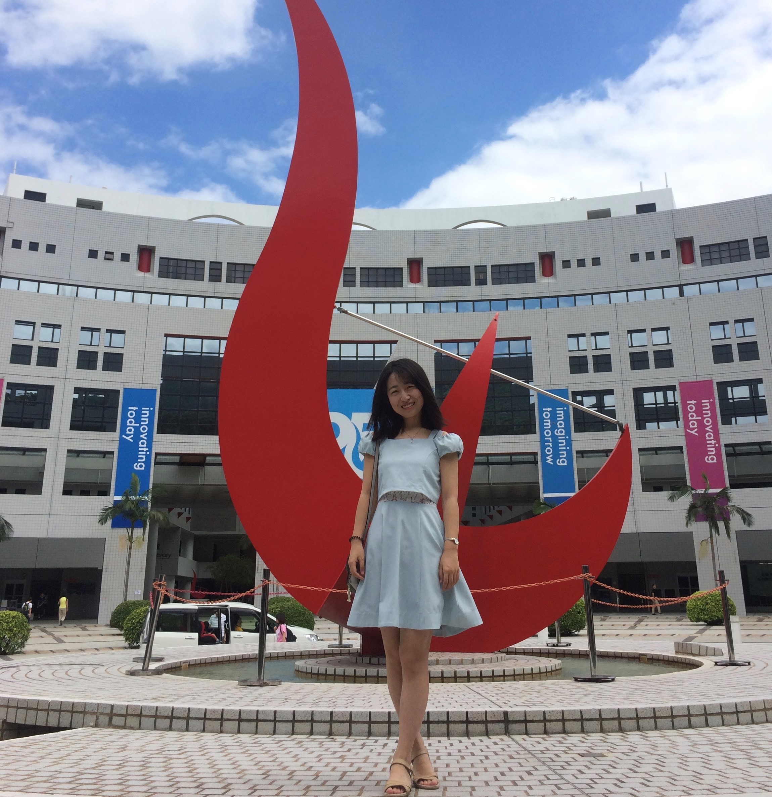

Jieru Zhao
(赵杰茹)
Ph.D. at HKUST
Department of Electronic and Computer Engineering
The Hong Kong University of Science and Technology
Email: jzhaoao@connect.ust.hk
Office: Room 3654, Lift 31-32
Publications
Awards
Research
Code
Talks